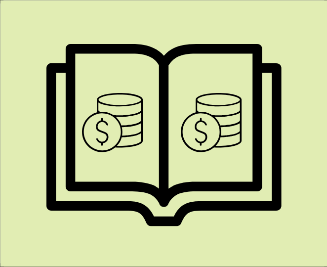
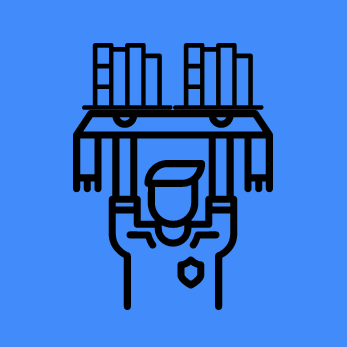

Finally,
|
|
|  |
Publish your own books,
|
Directly support your favorite authorsThrough NoveLink, fans of a particular NoveLink creator can follow their future projects and establish a 'feed' of sorts. This feed will include all of the author's works published on NoveLink, which a fan can access directly through the site completely for free. Fans can also directly donate to their favorite authors to support their career even more. NoveLink, however, is not completely limited to smaller authors that are looking to gain an audience, but it is also encouraged for already well-established authors to use the site to directly communicate with fans. |
 |

|
Create or join writers' guildsUsing NoveLink, fans of a particular group of authors, genre, or topic within literature can create writers' guilds. These guilds can serve as a themed discussion area in which multiple fans can easily communicate with eachother. Guilds can even create their own flags and raise funds to donate to certain authors within NoveLink. The more money a guild donates and the more members it has can give it special status, and can be featured on the Top Guilds page. |